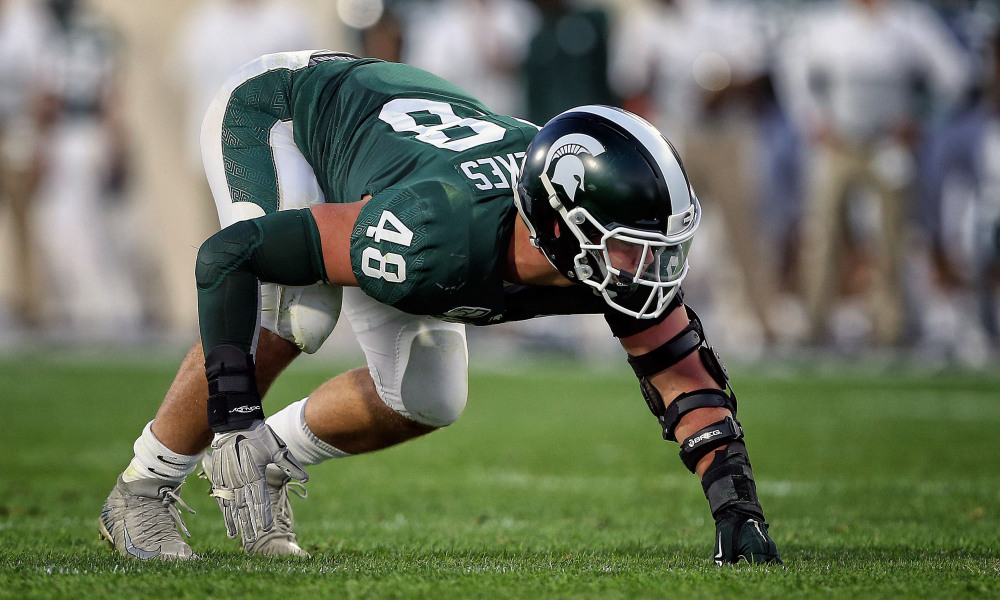
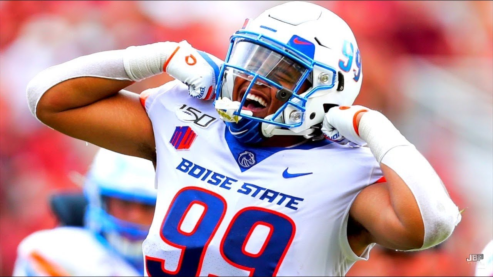
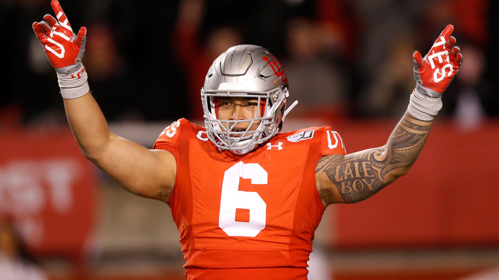

Colten Cowell
Colten Cowell
5/16/2020
Top Ten Steals of 2020 NFL Draft
Every year teams spend months studying film and interviewing players.
Unfortunatley, this year this process was interrupted by the COVID-19 pandemic
and teams had to become creative on how to evalute the future stars of the NFL.
Even during the strange times some teams
were still able to make a splash in the NFL draft and find some hidden gems. To highlight the biggest steals, ranking order was based
on where a player was drafted versus where they were projected to be drafted using
FiveThirtyEight's
draft model as a reference. Below you can find the list of 10 players that have the potential to be superstars.
- DE James Lynch, Baylor
- C Tyler Biadasz, Wisconsin
- S Brian Cole II, Mississippi State
- DE Kenny Willekes, Michigan State 
- CB Bryce Hall, Virginia
- WR K.J. Hill, Ohio State
- DE Curtis Weaver, Boise State 
- OT Prince Tega Wanogho, Auburn
- DE Bradlee Anae, Utah 
- OG Netane Muti, Fresno State
Round Taken: Round 4
Team Drafted By: Minnesota Vikings
Actual: 130
Projected: 59.3
Difference: 70.7

Round Taken: Round 4
Team Drafted By: Dallas Cowboys
Actual: 146
Projected: 69.3
Difference: 76.7

Round Taken: Round 7
Team Drafted By: Minnesota Vikings
Actual: 249
Projected: 171.5
Difference: 77.5
Round Taken: Round 7
Team Drafted By: Minnesota Vikings
Actual: 225
Projected: 144.8
Difference: 80.2

Round Taken: Round 5
Team Draftd By: New York Jets
Actual: 159
Projected: 73.5
Difference: 85.5

Round Taken: Round 7
Team Drafted By: Los Angeles Chargers
Actual: 220
Projected: 122.9
Difference: 97.1
Round Taken: Round 5
Team Drafted By: Miami Dolphins
Actual: 165
Projected: 64.6
Difference: 100.4

Round Taken: Round 6
Team Drafted By: Philadelphia Eagles
Actual: 210
Projected: 103.5
Difference: 106.5
Round Taken: Round 5
Team Drafted By: Dallas Cowboys
Actual: 180
Projected: 72.4
Difference: 107.6

Round Taken: Round 6
Team Drafted By: Denver Broncos
Actual: 181
Projected: 67.4
Difference: 113.6